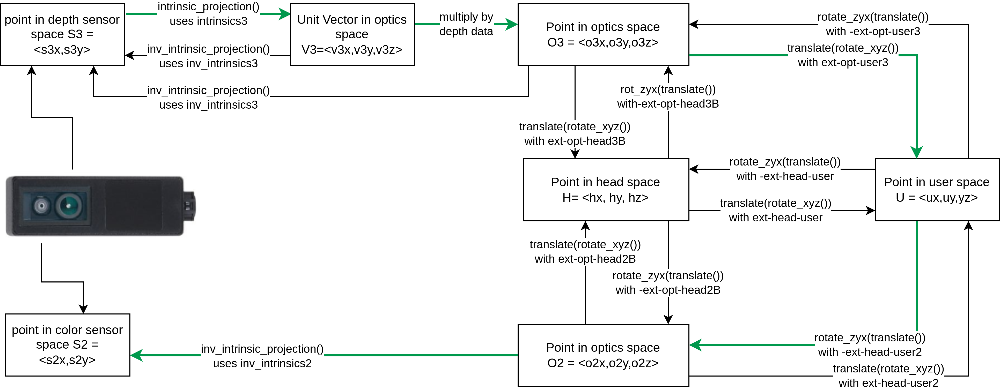
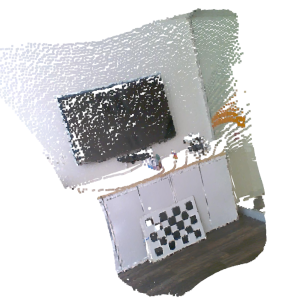

Introduction to ifm camera coordinate systems and their transformations
This guide should help newcomers understand camera coordinate systems (and frames), and their relative transformations, and provide an overview of the implementation for the O3C camera system.
There are a few different coordinate- systems / frames to be aware of:
(sensor / pixel space)
Optics space:
Optics space non-rectified
Optics space rectified
Head space
User space
IMU space
Robot space
Every O3C camera head ships pre-calibrated, so it can provide point clouds directly in the head-coordinate-system. For the exact methods to retrieve calibration parameters and perform transformations, see the calibration examples.


Sensor space (pixel coordinates)
Classical 2D pixel coordinates (row, column). The upper-left pixel is (0,0); for the O3C camera the bottom-right pixel is (160,240).
Optics space
Non-rectified
A 3D vector representing an image ray relative to the camera sensor, before correcting for lens distortion. All 2D images (amplitude, distance, distance noise, reflectivity, confidence, and 2D RGB) are supplied non-rectified, since rectification requires resampling that would mix data from neighboring pixels. Converting between sensor space and optics space uses the intrinsic and inverse-intrinsic calibration.
Rectified
A 3D vector representing a real-world position relative to the camera optics, after correcting for lens distortion.
O3C uses a right-handed Cartesian coordinate system with (0,0,0) at the center of the camera optics:
z: out of the sensor (orthogonal to the front face)
x: opposite the connectors
y: downward

This frame is offset from head space along trans_Z and trans_X, plus small angle corrections for any misalignment of the optics module relative to the head.
Head space
A 3D vector representing a real-world position relative to the camera head.
O3C uses a right-handed Cartesian coordinate system with (0,0,0) at the center of the rear face of the camera (intersection of the two diagonally opposing mounting points):
z: out of the front face
x: opposite the connectors
y: upward
User space
Represents positions relative to whatever reference point is most convenient on the customer’s machinery (also called the robot-coordinate-system).
To receive point clouds directly in user space, define the camera head’s position within user space via the extrinsicHeadToUser parameter, configurable per port. This is the extrinsic calibration.
Extrinsic calibration
A 6 degree-of-freedom pose (x-y-z translation plus roll, pitch, yaw) used to transform points between coordinate systems. See “The big picture” for the full processing pipeline.
Generating point clouds from scratch
The diagram below shows how the calibration data and example functions translate one form of camera data to another. The names used match the functions and variables in examples such as 2D-3D Registration, whose result is shown below: a point cloud colored by associating depth data with color data from an O3R225 camera.

Glossary
Intrinsic calibration
Encodes a lens’s magnification and distortion so that a pixel in sensor space can be converted into a direction in optics space. O3R supports two optical models, each identified by a model ID. intrinsic_projection() takes intrinsic parameters and a model ID and returns the unit vectors for each pixel’s ray direction.
Inverse-intrinsic calibration
The reverse operation: converts a point in optics space into a point in sensor space. inv_intrinsic_projection() applies inverse-intrinsic data (also model-specific) to a point or point cloud to determine its position in sensor space.